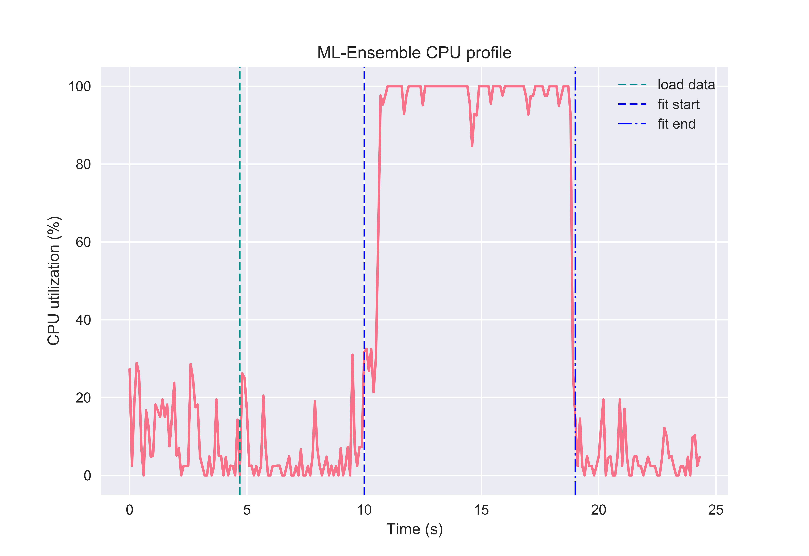
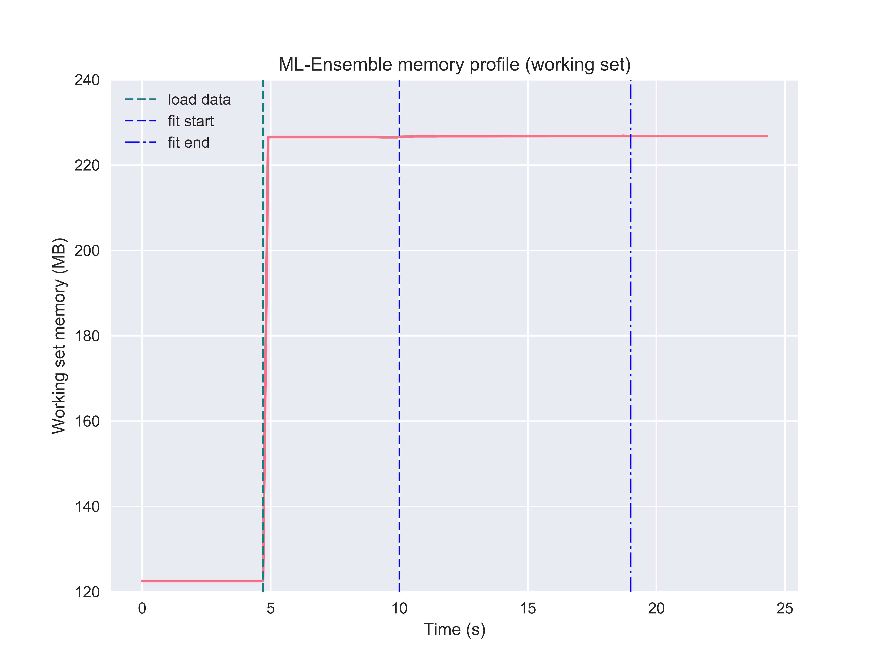

Memory consumption¶
Memory mapping¶
When training data is stored in-memory in the parent process, training a ensemble in parallel entails sending the array from the parent process to the subprocess through serialization of the data. Even for moderately sized datasets, this is a time consuming task. Moreover, it creates replicas of the same dataset to be stored in-memory, and so the effective size of the data kept in memory scales with the number of processes used in parallel. For large datasets, this can be catastrophic.
ML-Ensemble overcomes this issue by using memmapping, which allows sub-processes to share memory of the underlying data. Hence, input data need not be serialized and sent to the subprocesses, and as long as no copying takes place in the sub-process, memory consumption remains constant as the number of sub-processes grows. Hence, ML-Ensemble can remain memory neutral as the number of CPU’s in use increase. This last point relies critically on avoiding copying, which may not be possible, see Gotcha’s for further information.
We can easily illustrate this issue by running a dummy function in parallel
that merely holds whatever data it receives from a few seconds before closing.
Here, we make use of the CMLog monitor that
logs the memory (and cpu) usage of the process that instantiated it.
>>> import numpy as np
>>> from joblib import Parallel, delayed
>>> from time import sleep, perf_counter
>>> from mlens.utils.utils import CMLog
>>> def hold(arr, s):
... """Hold an array ``arr`` in memory for ``s`` seconds."""
... sleep(s)
>>> # Monitor memory usage
>>> cm = CMLog()
>>> cm.monitor()
>>> sleep(3)
>>> # Load an approx. 800MB array into memory
>>> t1 = int(np.floor(perf_counter() - cm._t0) * 10)
>>> array = np.arange(int(1e8)).reshape(int(1e5), int(1e3))
>>> sleep(3)
>>> # Launch 4 sub-process, each holding a copy of the array in memory.
>>> t2 = int(np.floor(perf_counter() - cm._t0) * 10)
>>> Parallel(n_jobs=-1, verbose=100, max_nbytes=None)(
... delayed(hold)(array, 3)
... for _ in range(4))
>>> t3 = int(np.floor(perf_counter() - cm._t0) * 10)
>>> # Job done
>>> sleep(3)
>>> cm.collect()
Pickling array (shape=(100000, 1000), dtype=int64).
Pickling array (shape=(100000, 1000), dtype=int64).
[Parallel(n_jobs=-1)]: Done 1 tasks | elapsed: 17.1s
Pickling array (shape=(100000, 1000), dtype=int64).
[Parallel(n_jobs=-1)]: Done 5 out of 4 | elapsed: 26.3s remaining: -5.3s
Pickling array (shape=(100000, 1000), dtype=int64).
[Parallel(n_jobs=-1)]: Done 5 out of 4 | elapsed: 36.4s remaining: -7.3s
[Parallel(n_jobs=-1)]: Done 5 out of 4 | elapsed: 43.8s remaining: -8.8s
[Parallel(n_jobs=-1)]: Done 4 out of 4 | elapsed: 43.8s finished
Notice that the parallel job seems to be doing an awful lot of data
serialization. The memory log of the cm reveals that peak memory usage is
over some three times larger than the original array when 4 cpu’s are in use.
With such a memory profile, an ensemble would not be very scalable.
Memmapping allows us to overcome these issues for two reaons. First, it entirely overcomes serialization of the input data as processes share memory and hence the subprocesses can access the input arrays directly from the parent process. Second, insofar no copying of the input data takes place, memmapping avoids scaling the data size requirement by the number of processes running. To see this first hand, we can modify the above example to convert the toy array to a memmap and again monitor memory usage.
>>> import os
>>> import tempfile
>>> from joblib import load, dump
>>> with tempfile.TemporaryDirectory() as tmpdir:
>>> f = os.path.join(tmpdir, 'arr.mmap')
>>> if os.path.exists(f): os.unlink(f)
>>> cm = CMLog(True)
>>> cm.monitor()
>>> sleep(3)
>>> array = np.arange(int(1e8)).reshape(int(1e5), int(1e3))
>>> t1 = int(np.floor(perf_counter() - cm._t0) * 10)
>>> # Now, we dump the array into a memmap in the temporary directory
>>> dump(array, f)
>>> array = load(f, mmap_mode='r+')
>>> t1_d = int(np.floor(perf_counter() - cm._t0) * 10)
>>> sleep(3)
>>> t2 = int(np.floor(perf_counter() - cm._t0) * 10)
>>> Parallel(n_jobs=-1, verbose=100, max_nbytes=None)(
... delayed(hold)(array, 3)
... for _ in range(4))
>>> t3 = int(np.floor(perf_counter() - cm._t0) * 10)
>>> sleep(3)
>>> cm.collect()
[Parallel(n_jobs=-1)]: Done 1 tasks | elapsed: 3.0s
[Parallel(n_jobs=-1)]: Done 5 out of 4 | elapsed: 3.0s remaining: -0.6s
[Parallel(n_jobs=-1)]: Done 5 out of 4 | elapsed: 3.0s remaining: -0.6s
[Parallel(n_jobs=-1)]: Done 5 out of 4 | elapsed: 3.0s remaining: -0.6s
[Parallel(n_jobs=-1)]: Done 4 out of 4 | elapsed: 3.0s finished
Notice first that no pickling is reported in the parallel job; second, the time
to completion is no more than the 3 seconds we asked the hold function to
sleep. In other words, memmaping causes no process time overhead. This stands
in stark contrast to the previous example, which needed over 40 seconds to
complete - an order of magnitude slower. Moreover, inspecting the memory
profile, note that memmapping is completely memory neutral. In fact, if we
replace the original array with the memmap (as in this example),
the memory required to hold the original file can be released and so there
is no copy of the array kept in the process memory.
For further details on memmapping in parallel processing, see the joblib package’s documentation.
ML-Ensemble memory profiling¶
By leveraging memmapping, ML-Ensemble estimators are able to achieve memory neutral parallel processing. In the following example, an ensemble of three linear regression estimators with different preprocessing pipelines are fitted on data comprising 6 million observations and ten features. The following profiling can be run from the package root with the below command:
>>> python benchmarks/memory_cpu_profile.py
Note that the ensemble leveraged the full capacity of the CPU to fit the ensemble.
And while doing so, memory consumption remained neutral. Note here that becase the input data was first loaded into memory, then passed to the ensemble, the original data stays in memory (the ensemble instance cannot delete objects outside it’s scope). To make the ensemble even more memory efficient, a user can specify a path to a csv file or stored numpy array or numpy memmap, in which case no memory will be committed to keeping the original data in memory. See the Passing file paths as data input tutorial for more information.
Memory performance benchmark¶
Finally, we consider how a SuperLearner compares in terms of memory
consumption against a set of Scikit-learn estimators. This benchmark
relies on the mprof package, which can be installed with pip. The
benchmark compares the sklearn.linear_model.Lasso,
sklearn.linear_model.ElasticNet and the
sklearn.neighbors.KNeighborsRegressor against an ensemble that
uses the former two as the first layer and the latter as a final meta
estimator.
>>> mprof run friedman_memory.py
>>> mprof plot friedman_memory.py -t "Memory Consumption Benchmark"
mprof: Sampling memory every 0.1s
running as a Python program...
ML-ENSEMBLE
Benchmark of ML-ENSEMBLE memory profile against Scikit-learn estimators.
Data shape: (1000000, 50)
Data size: 400 MB
Fitting LAS... Done | 00:00:01
Fitting KNN... Done | 00:00:08
Fitting ENS... Done | 00:00:21
Fitting ELN... Done | 00:00:01
Profiling complete. | 00:01:13
Using last profile data.
Gotcha’s¶
The above analysis holds under two conditions: (1) no copying of the input data is triggered during slicing the K-folds and (2) the base estimators do not copy the data internally. However memmapping always avoids array serialization between sub-processes which can be significant burden on time consumption.
(1) Because of the structure of numpy’s memory model, slicing an array returns a view only if the slice contiguous. In particular, this means that we cannot slice a numpy array to retrieve two partitions separated by one or more partitions. Technically, this limitation arises since it breaks the stride patterns numpy arrays relies on to know where find a row. ML-Ensemble can therefore only avoid copying training data when the number of folds is 2, in which case the first half is used for training and the latter for predictions. For 3 of more folds, the training set is no longer contiguous and hence slicing the original array triggers advanced indexing, in turn causing a copy of the underlying data to be returned. Being a limitation within numpy, this issue is beyond the control of ML-Ensemble.
Also note that if the data is preprocessed within ML-Ensemble, transformers
automatically return copies of the input data (i.e. breaks the link with the
memory buffer) and will therefore always trigger a copying. In fact, if
it does not, transforming the memmapped original data will raise an OSError
since the memory map of the original data is read-only to avoid corrupting the
input.
(2) The user must take not what input requirements are necessary for a Scikit-learn estimator to not copy the data, and ensuring the input array is in the given format. Note that prediction arrays are always dense C-ordered float64 arrays. For instance, several Scikit-learn linear models defaults to copying the input data, Scikit-learn random forests estimators copy the data if it is not Fortran contiguous. Similarly, Scikit-learn SVM models copy data that does not satisfy its particular requirements.